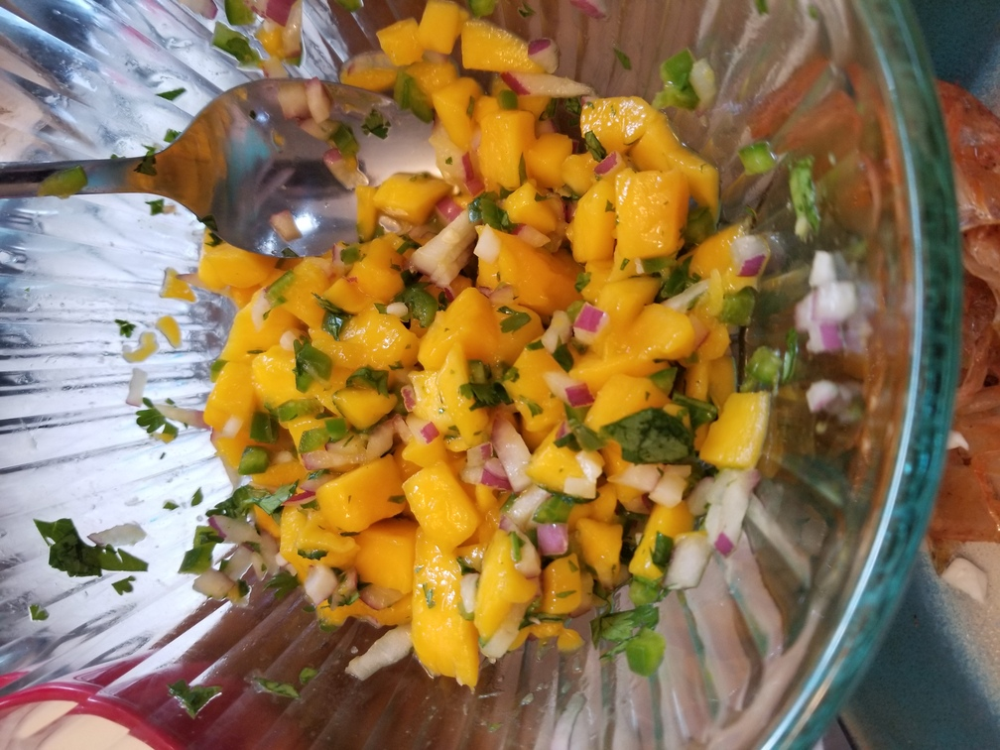

Mango Salsa
Originally from: NA

Ingredients
- 1 diced mango
- 1/2 chopped red onion
- 1 finely diced jalepeño
- chopped cilantro
- lime
- salt
Directions
Combine all ingredients.
Notes
-
Have made multiple times - results mostly depend on quality of mango. Vary amount of onion / peppers / lime / salt to taste. Good with fish / shrimp tacos.